Fabricant Fiable de Machines Industrielles de Savonnerie
Fondée en 2005, Kaifeng Jasun Industry Co., Ltd. est spécialisée dans les machines professionnelles de fabrication de savon et les lignes de production complètes. Avec plus de deux décennies d'expertise industrielle, nous nous engageons à fournir aux savonneries mondiales des équipements de traitement de haute performance, de la saponification à l'emballage final du savon. Nos machines sont exportées dans plus de 50 pays et régions, y compris des pays développés comme les États-Unis.
Le processus de fabrication de savon à partir d'huiles végétales ou de graisses animales et de soude caustique
L'ensemble du processus se divise en deux étapes principales.
La première étape (Partie A) comprend la saponification et le séchage pour produire des copeaux de savon. Il s'agit de la réaction de saponification entre les huiles végétales ou graisses animales et la soude caustique pour former une base de savon. Cette base est ensuite traitée dans un système de séchage sous vide et une granulateur (ou extrudeuse) qui la transforme en copeaux de savon.
La seconde étape (Partie B) consiste à transformer les copeaux de savon en savon fini. Les copeaux sont introduits dans un mélangeur où ils sont associés à du parfum et des pigments. Le mélange est ensuite alimenté dans une boudineuse d'affinage (affineuse). L'objectif principal est de mélanger, homogénéiser et broyer soigneusement la matière savonneuse. Ensuite, les copeaux passent dans un broyeur à trois cylindres, où ils sont réduits en fines feuilles de savon. Ces feuilles sont transférées par tapis roulant vers une boudineuse sous vide (à double vis ou à vis unique), où elles sont à nouveau affinées et extrudées en continu pour former une longue barre de savon à la forme souhaitée. Cette barre est ensuite découpée et façonnée en pains individuels aux dimensions requises à l'aide d'une machine de découpe automatique ou d'une presse à savon (estampage/marquage). Enfin, les pains de savon finis sont emballés par une machine d'emballage (type « flow-pack », encartonneuse ou emballeuse papier).
Une Ligne Completa De Production De Savon, De La Saponification De L'huile Au Savon Fini
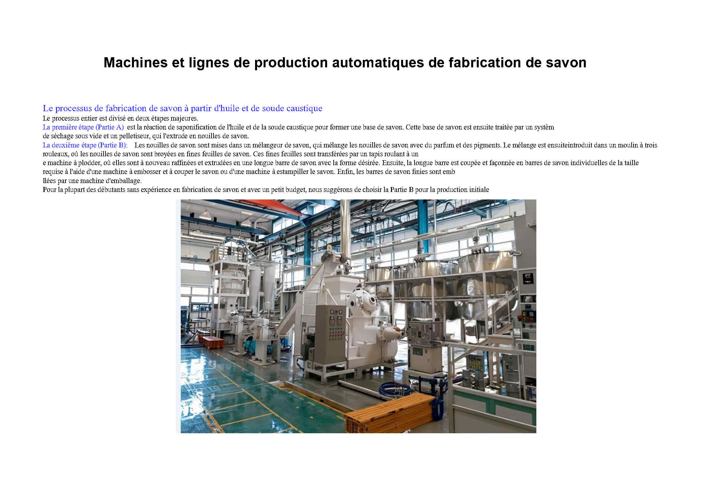
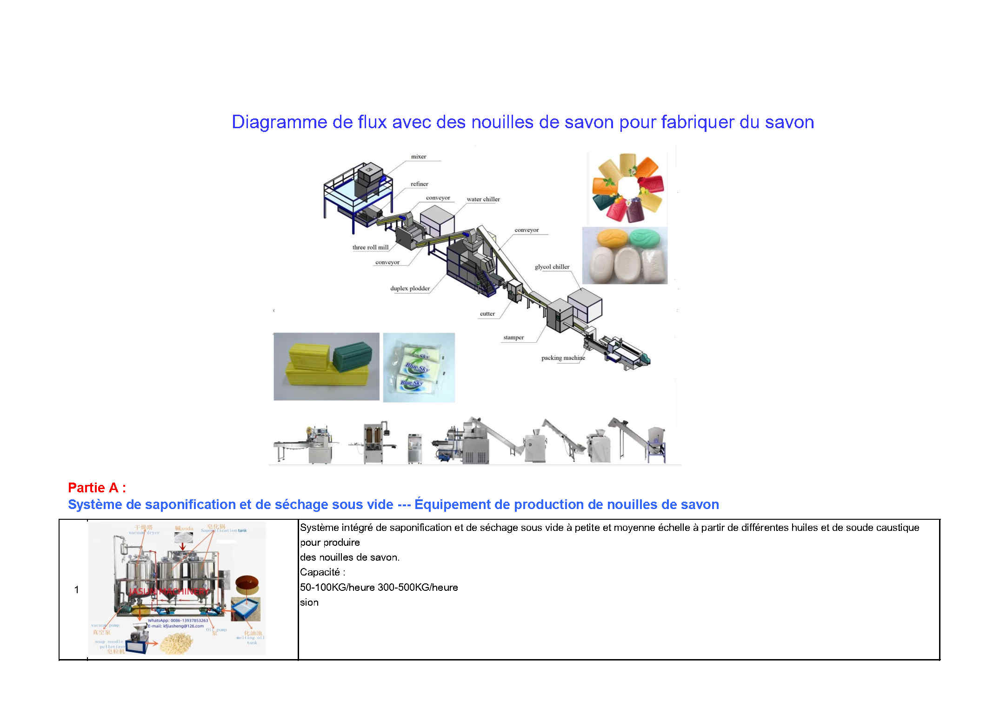
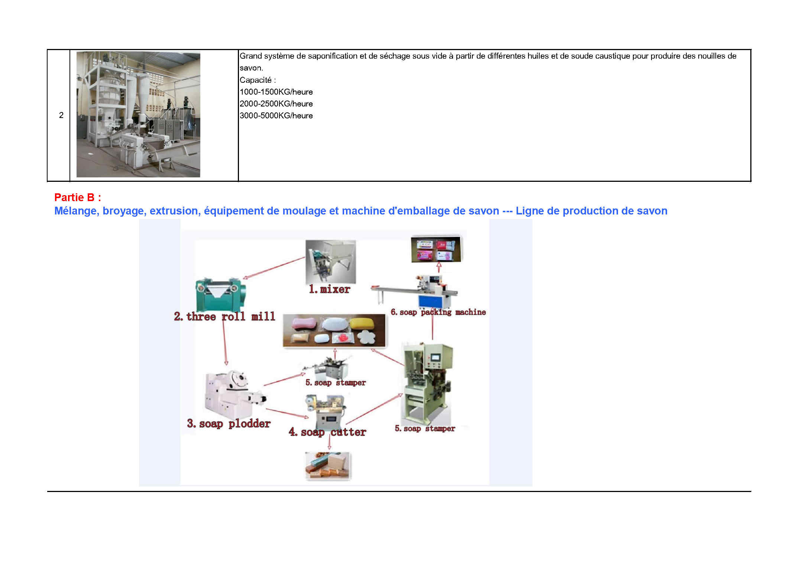
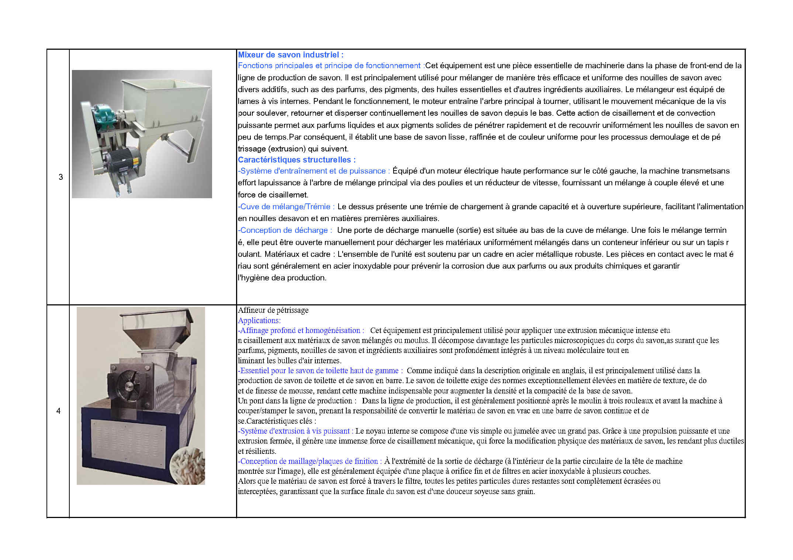
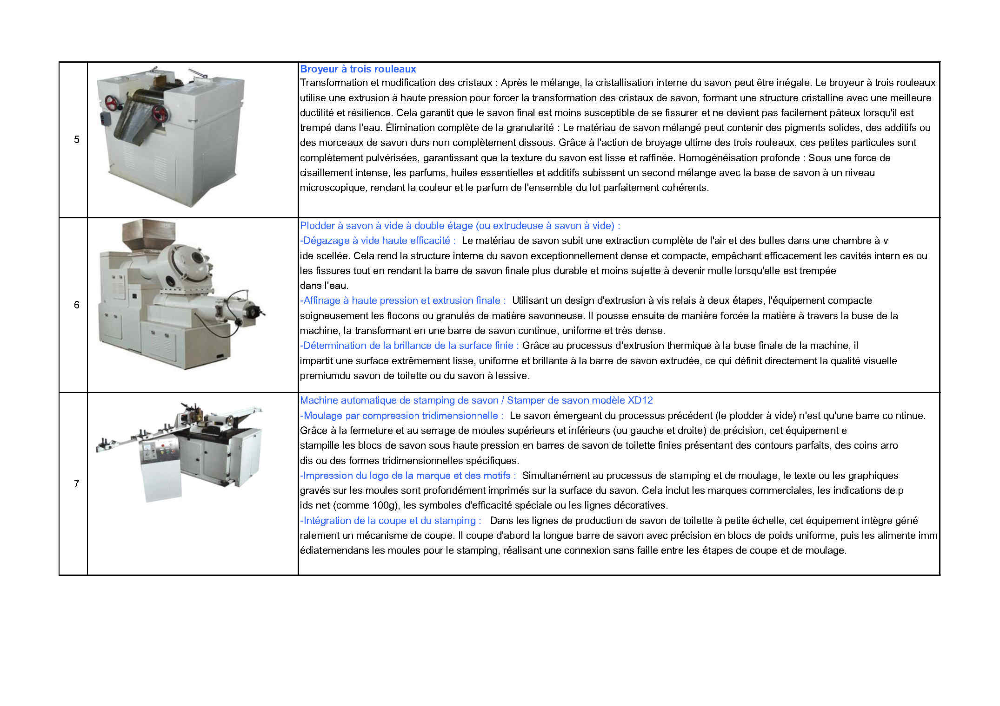
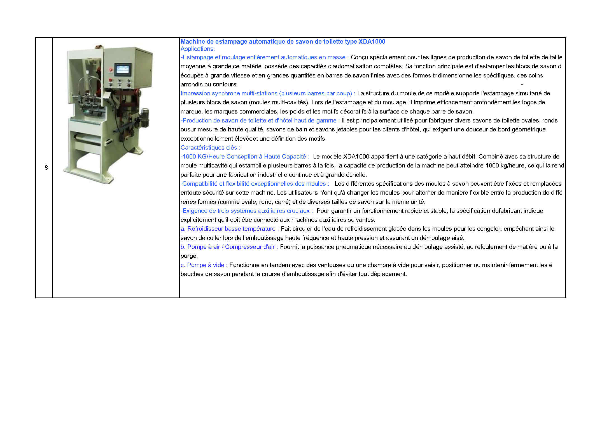

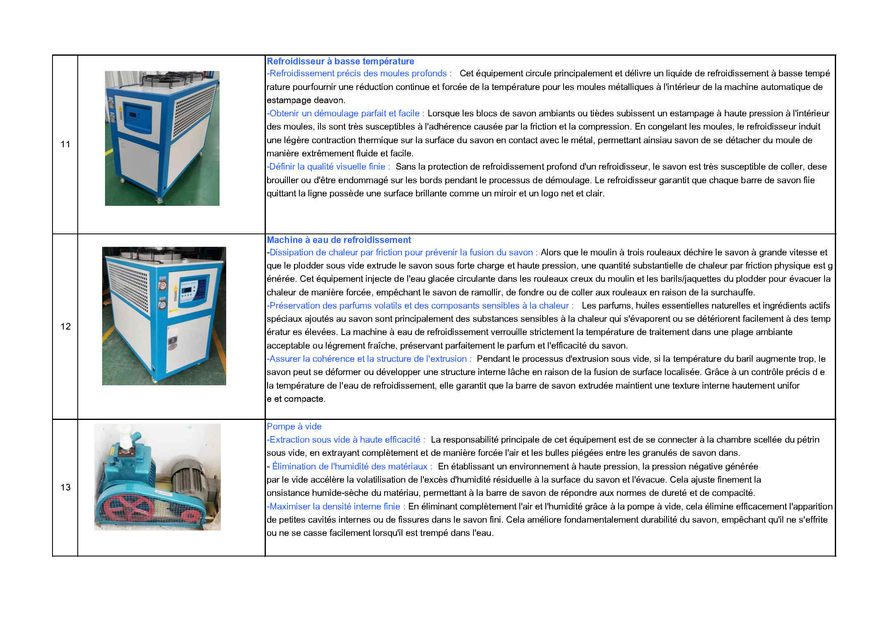
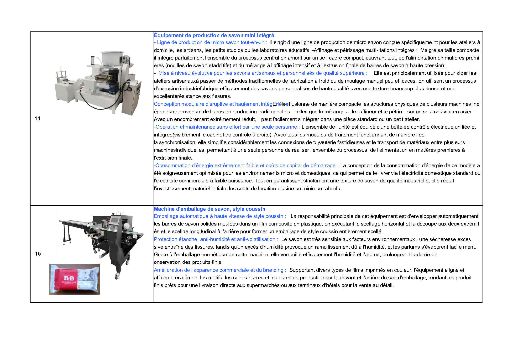
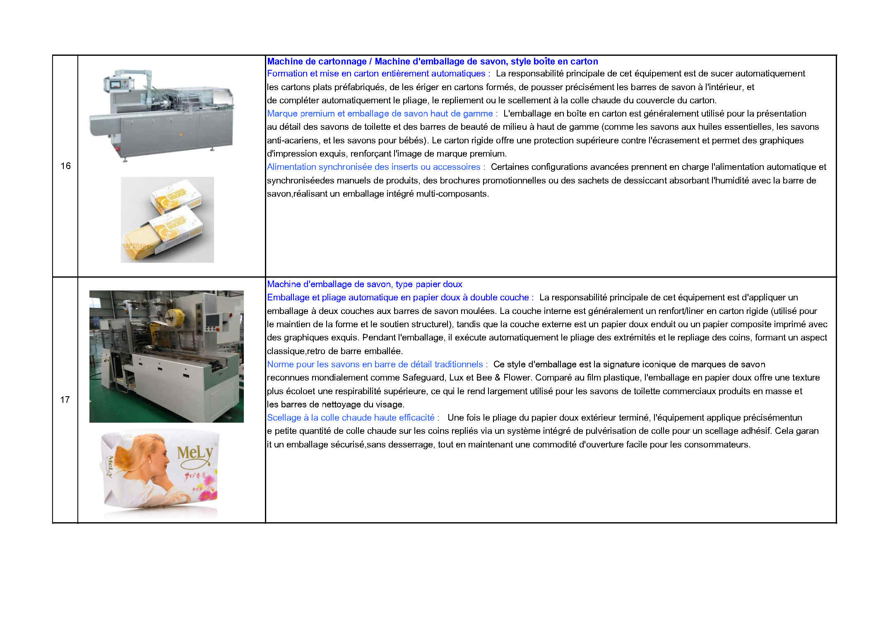
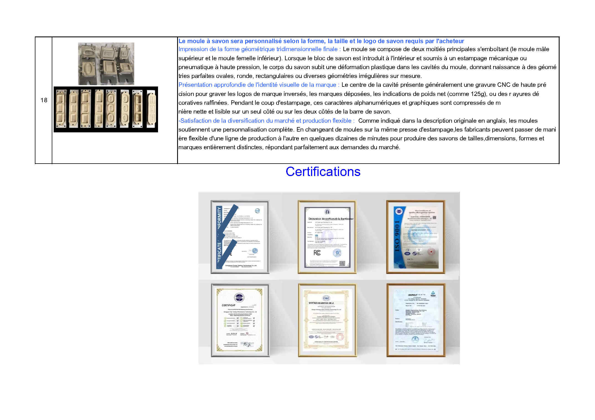
Emballage et Expédition des Équipements
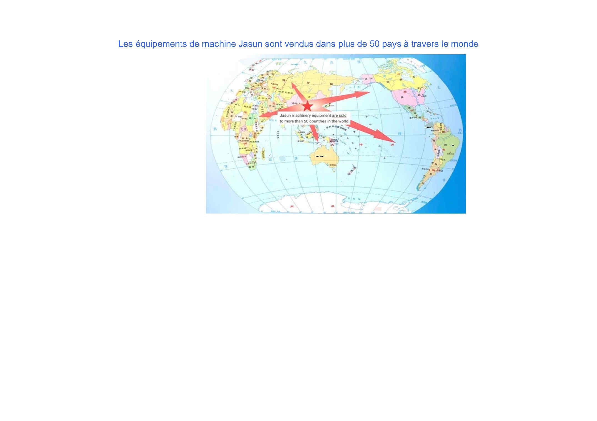
Contactez-nous pour un devis et un catalogue gratuits
Contactez directement notre équipe d'ingénieurs via WhatsApp ou par e-mail pour obtenir les tarifs.
💬 Discuter sur WhatsApp WhatsApp : +86-13937853263✉ E-mail : jasunmachinery@gmail.com